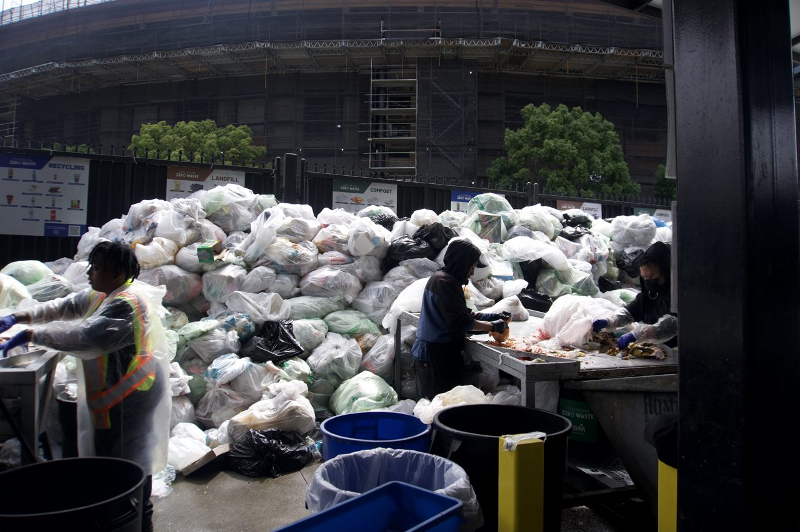
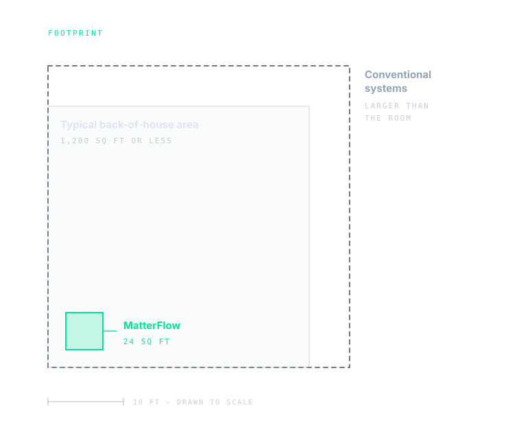
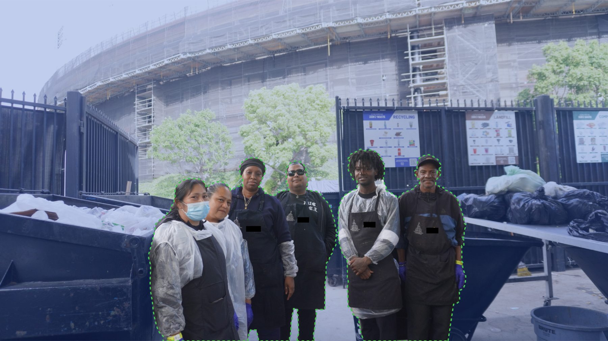
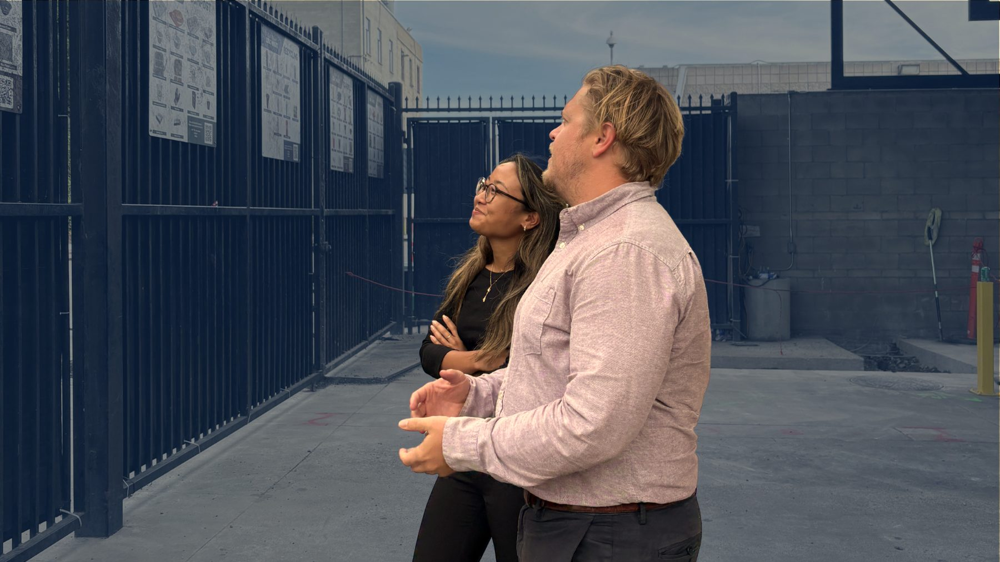
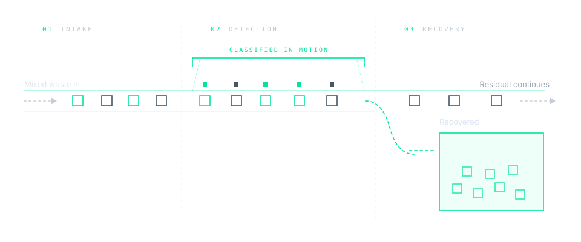

Space.
Twenty-four square feet inside the back-of-house area a venue already has. Not a new sorting floor.
With MatterFlow, recoverable material is identified, separated and logged — with our claim of saving a day of the sort. We are a deployable, waste-automation-as-a-service solution for event venues that lack the spatial infrastructure for more permanent systems.
Identify. Kick. Repeat.
What we're building
Every event ends the same way. Bags arrive at the dock faster than anyone can work through them, and a crew sorts by hand under time pressure in a room that was never designed to grow. How much gets recovered depends on how long the shift can hold out.
We automate that sort. Same bags, same room, same crew — the picking is done by machine, and every decision is recorded as it happens. What comes out is a higher recovery rate, less handling, and a defensible number instead of an estimate.

What changes
Twenty-four square feet inside the back-of-house area a venue already has. Not a new sorting floor.
The sort runs at machine speed instead of hand speed, so the dock clears while the crew is still on shift.
Crews stop picking through mixed waste. They load, monitor, and move material instead.
Target: take a full day out of the post-event sort.
A sort that runs into the following day finishes inside the shift it starts in. This is the goal the system is designed against — our pilot at the Coliseum is where it gets measured.

Pilot partnership
MatterFlow exists because of what we found at the Los Angeles Memorial Coliseum. We spent our discovery there — in back of house, during load-out, with the crews who actually move the waste — and the product is shaped by what that showed us.
We are now working exclusively with the Coliseum on a confirmed pilot. One venue, in depth, before anything else.


At a glance
How material moves through the system.

Bags arrive from the floor exactly as they were collected. No pre-sorting, no separate bins, nothing asked of the crowd.
Material is classified in motion, item by item, on the way through.
Recoverable material is separated out and collected. Everything else continues on as residual. Every decision is logged.
Core team
Chief Executive Officer
Chief Operating Officer
Chief Technology Officer
Head of Hardware Engineering
Careers
We're setting up fellowship-based roles — details are still being worked out, and they'll be announced here first.
In the meantime we'll read anyone who gets in touch. We're especially keen to hear from people working in hardware, computer vision, sustainability, and operations, but if your background sits outside that list and you think you belong here, say so.
Contact
Partnerships, venues, press, or anything else — one inbox, and we read all of it.
team@matterflow-usa.com